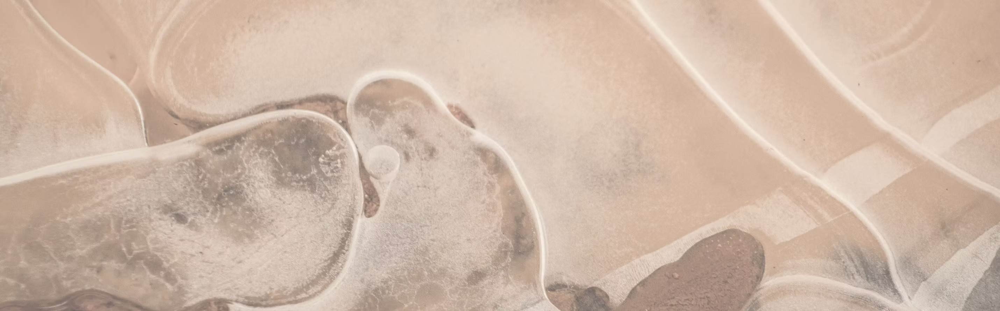

Education
Learning that feels possible
Mentorship, tutoring, and hands-on learning that help students build skills and confidence.
We work with schools and community organizations to support practical programs in education, wellness, and innovation.
Soni Family Foundation was created to support local organizations that already understand their communities and are ready to do more.
Mentorship, tutoring, and hands-on learning that help students build skills and confidence.
Programs that strengthen belonging, stability, and the well-being students need to succeed.

Small pilots and practical ideas that can be tested, improved, and expanded over time.
We want to understand the need, stay involved, and learn with our partners.

Volunteer, share an idea, introduce a partner, or support a future program.